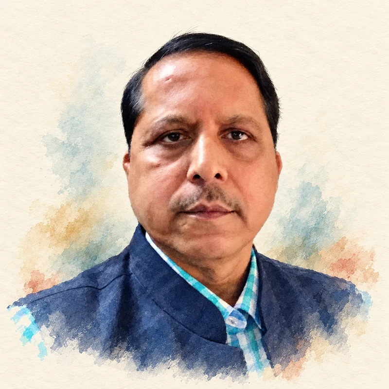

About Me

Pradeep Biswal is a poet writing in Odia and English, a translator and an editor of Kabita Live. His poems have travelled into other Indian languages, bringing his writing to readers through both the original words and translation.
His Odia collections include Bhumiparasha, Dhusara Dhrupadi, Seshaloka, Prema Kavita and Pheriba Batare. Jal Darpan and Lautte Raste Mein bring together his poetry in Hindi translation.
His English collection A House Within, published by Authorspress in 2018, explores the inward life alongside the world outside. In his review of the book, Bhaskaranand Jha Bhaskar discusses its attention to nature, love and introspection, as well as war, hardship and the lives of ordinary people.
Alongside his literary career, Biswal served in the Indian Administrative Service and retired as Special Secretary in Odisha’s Finance Department. Poetry, translation and editorial work form the continuing literary thread through his life in public service.